AWS Architectural Diagrams
Explore real-world AWS architecture patterns with interactive diagrams and detailed explanations to master cloud infrastructure design
Serverless Java Container with API Gateway & DynamoDB
Event-driven serverless architecture using Lambda, API Gateway, DynamoDB, and S3 with comprehensive audit logging via CloudTrail and X-Ray tracing
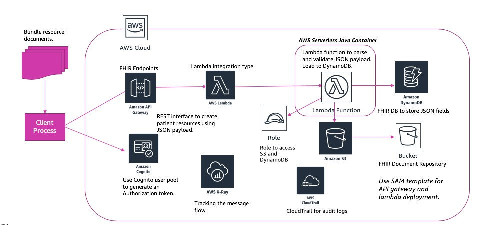
📋 Architecture Overview
This serverless architecture demonstrates a fully managed solution for processing JSON documents. Clients upload bundled documents that trigger Lambda functions via API Gateway, which parse and validate the data before storing it in DynamoDB and S3.
🔐 Key Components:
Amazon Cognito: Manages user authentication and generates authorization tokens for secure API access with MFA support
API Gateway with FHIR Endpoints: RESTful API that creates patient resources using JSON payloads with request validation and rate limiting
AWS Lambda: Serverless functions parse and validate JSON payloads with automatic scaling and pay-per-invocation pricing
Storage Layer: DynamoDB stores structured FHIR fields while S3 stores complete document bundles with versioning
Monitoring: X-Ray tracks message flow across services and CloudTrail provides comprehensive audit logs for compliance
💡 Key Takeaways
- Zero server management with fully serverless architecture
- Automatic scaling from zero to enterprise-level traffic
- Pay-per-use pricing reduces operational costs significantly
- Comprehensive observability with X-Ray and CloudTrail
- FHIR-compliant healthcare data handling
Three-Tier Web Application with Multi-AZ Deployment
Highly available three-tier architecture with presentation, application, and database layers spanning multiple Availability Zones with Route 53, CloudFront, and ElastiCache
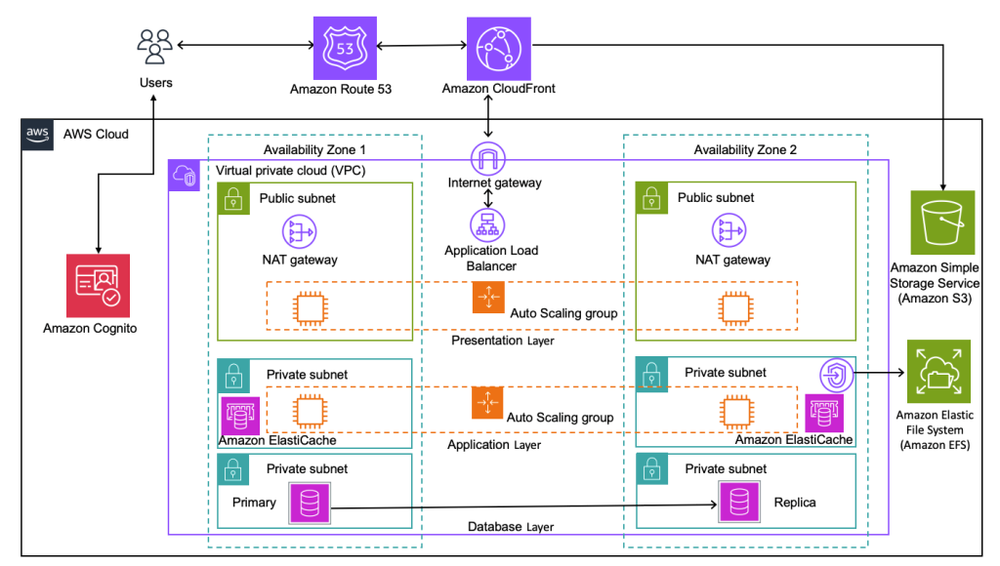
📋 Architecture Overview
This production-grade three-tier web application features complete redundancy across two Availability Zones. Each layer (presentation, application, database) is isolated in separate subnets with Auto Scaling groups ensuring high availability.
🌐 Architecture Layers:
Global Layer: Route 53 for DNS management and CloudFront CDN for global content delivery with edge caching and DDoS protection
Presentation Tier: Auto Scaling group of front-end servers behind Application Load Balancer serving user interfaces with health checks
Application Tier: Business logic servers with ElastiCache for in-memory caching, reducing database load by 80%
Database Tier: Aurora Primary in AZ1 with Aurora Replica in AZ2 for read scaling and automatic failover within 30 seconds
Storage: Amazon S3 for static assets with lifecycle policies and Amazon EFS for shared file system
💡 Key Takeaways
- Complete redundancy across two Availability Zones
- Auto Scaling ensures optimal resource utilization
- ElastiCache significantly improves performance
- CloudFront provides global content delivery
- Three-tier architecture separates concerns for maintainability
Location-Based Mobile Application with AWS Amplify
Real-time geolocation application leveraging AWS Amplify, Location Service, AppSync, and EventBridge for event-driven geofencing and location tracking
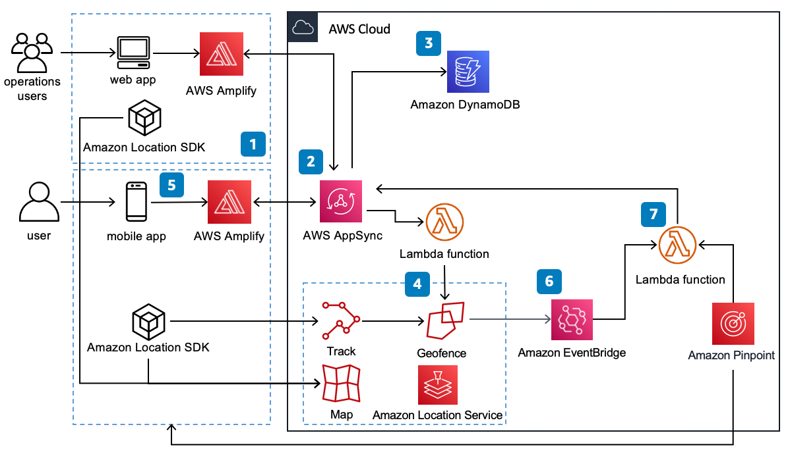
📋 Architecture Overview
This location-aware mobile and web application uses AWS Amplify framework to track user locations, define geofences, and trigger events when users enter/exit zones with real-time updates via AppSync GraphQL subscriptions.
📱 Key Components:
AWS Amplify (Steps 1-2): Unified framework accelerating mobile/web development with pre-built UI components, offline sync, and authentication
AppSync (Step 3): Managed GraphQL API providing real-time subscriptions for live location updates with DynamoDB integration and conflict resolution
Location Service (Step 4): Provides Track for real-time monitoring, Geofence for virtual perimeters, Map rendering, geocoding, and routing
EventBridge (Step 6): Routes geofence entry/exit events to Lambda functions with event filtering and schema registry
Lambda (Step 7): Executes business logic like sending notifications via SNS and updating location history in DynamoDB
Amazon Pinpoint: Delivers push notifications, emails, SMS for user engagement with campaign analytics and A/B testing
💡 Key Takeaways
- AWS Amplify simplifies multi-platform development
- Real-time location updates via AppSync subscriptions
- Event-driven architecture with geofencing capabilities
- Cross-platform support (iOS, Android, Web)
- Serverless scalability for variable workloads
VPC Peering with Production & Development Environments
Multi-team AWS account structure with isolated Production and Development VPCs connected via VPC Peering, enabling controlled cross-environment access and cost visibility through AWS Cost Management
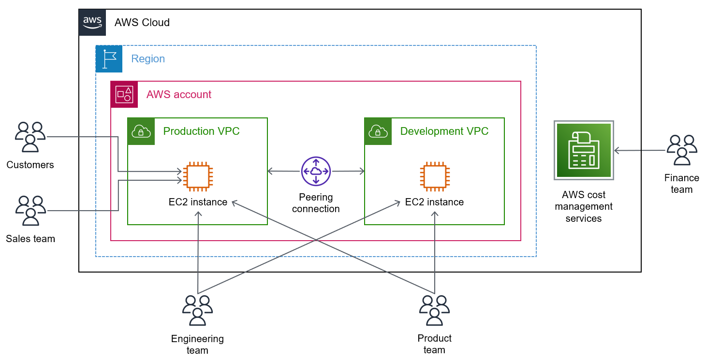
📋 Architecture Overview
This architecture illustrates a real-world multi-team AWS setup within a single AWS account and Region. Two isolated VPCs — Production and Development — are connected through a VPC Peering Connection, allowing internal traffic to flow securely between environments without traversing the public internet. Different teams interact with different EC2 instances based on their role, while the Finance team uses AWS Cost Management Services to track spending across both environments.
🏗️ Key Components:
Production VPC: Hosts the customer-facing EC2 instance serving live traffic from Customers and the Sales team. This VPC is the primary environment with strict access controls and higher security posture.
Development VPC: A separate isolated VPC hosting a dedicated EC2 instance used by Engineering and Product teams for building, testing, and validating features before they reach production.
VPC Peering Connection: A private, non-transitive network link between the Production and Development VPCs. It allows EC2 instances in both VPCs to communicate using private IP addresses — no NAT gateway, VPN, or internet exposure required. Peering is region-local here but can span regions.
Team Access Model: Customers and the Sales team access the Production EC2 instance directly. The Engineering team accesses both EC2 instances (cross-environment capability), while the Product team accesses the Development EC2 instance for validation. This role-based model enforces least-privilege access.
AWS Cost Management Services: The Finance team uses services like AWS Cost Explorer, Budgets, and Cost and Usage Reports to monitor spending across both VPCs. Tags applied to resources in each VPC enable granular cost attribution by environment and team.
💡 Key Takeaways
- VPC Peering enables private, low-latency cross-VPC communication without public internet exposure
- Separating Production and Development VPCs prevents accidental changes to live environments
- Peering connections are non-transitive — a third VPC cannot route through an existing peer
- Role-based team access enforces least-privilege and reduces blast radius of mistakes
- AWS Cost Management enables per-environment and per-team cost visibility for chargeback or showback models
Amazon EKS with VMware Cloud on AWS & CI/CD Pipeline
Hybrid cloud architecture combining Amazon EKS on a private subnet with VMware Cloud on AWS SDDC, backed by a fully automated CodePipeline CI/CD pipeline for container delivery
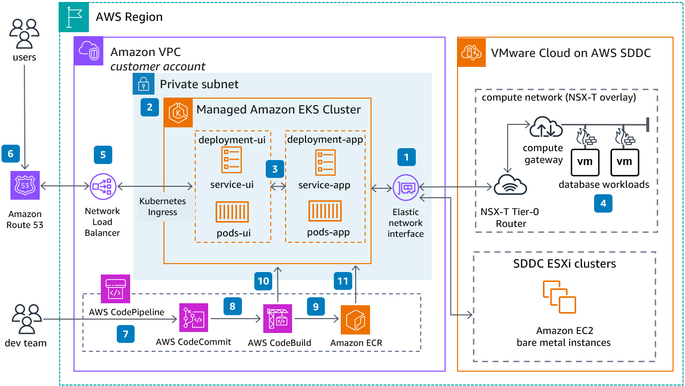
📋 Architecture Overview
This hybrid architecture bridges a native AWS environment and a VMware Cloud on AWS Software-Defined Data Center (SDDC). Application workloads run in a managed Amazon EKS cluster inside a private VPC subnet, while legacy or specialized database workloads remain on VMware VMs within the SDDC. A CI/CD pipeline automates container image building and deployment, and Route 53 with a Network Load Balancer handles user traffic routing.
⚙️ Key Components:
Amazon EKS Cluster (Step 2): A fully managed Kubernetes cluster deployed in a private subnet. It runs two logical deployment groups — deployment-ui (frontend services and pods) and deployment-app (backend services and pods) — separated for independent scaling and lifecycle management.
Kubernetes Ingress & Network Load Balancer (Step 5): Traffic from the internet enters via Route 53 DNS (Step 6), is directed to a Network Load Balancer (NLB), which forwards it through the Kubernetes Ingress controller to the appropriate UI or app service inside the EKS cluster.
Elastic Network Interface & NSX-T Router (Steps 1 & 4): The EKS cluster connects to the VMware SDDC via an Elastic Network Interface (ENI). The NSX-T Tier-0 Router within the SDDC compute network routes traffic between AWS and the VMware VMs hosting database workloads, enabling seamless hybrid connectivity.
CI/CD Pipeline (Steps 7–11): The dev team commits code to AWS CodeCommit (Step 7). CodePipeline orchestrates the workflow — triggering CodeBuild (Step 8) to compile and containerize the application, push the resulting image to Amazon ECR (Step 9), and then deploy updated containers to the EKS cluster (Steps 10 & 11) automatically.
VMware Cloud on AWS SDDC: The SDDC hosts EC2 bare metal instances (ESXi clusters) and VMware VMs running database workloads within an NSX-T overlay network. This allows enterprises to run VMware-native workloads on AWS hardware without re-platforming.
💡 Key Takeaways
- VMware Cloud on AWS lets enterprises extend on-premises VMware workloads to AWS without re-architecting
- EKS in a private subnet keeps container workloads secure and isolated from direct public access
- The CodePipeline + CodeBuild + ECR chain provides a fully managed, serverless CI/CD workflow
- NSX-T networking enables micro-segmentation and overlay networking within the SDDC
- Route 53 + NLB provides highly available, DNS-level traffic routing to Kubernetes Ingress
Industrial IoT Platform with Kelvin on Amazon EKS
End-to-end industrial IoT architecture connecting factory edge gateways to AWS EKS-hosted Kelvin platform, with customer-side EC2 deployments and integrations for analytics, ML, and monitoring
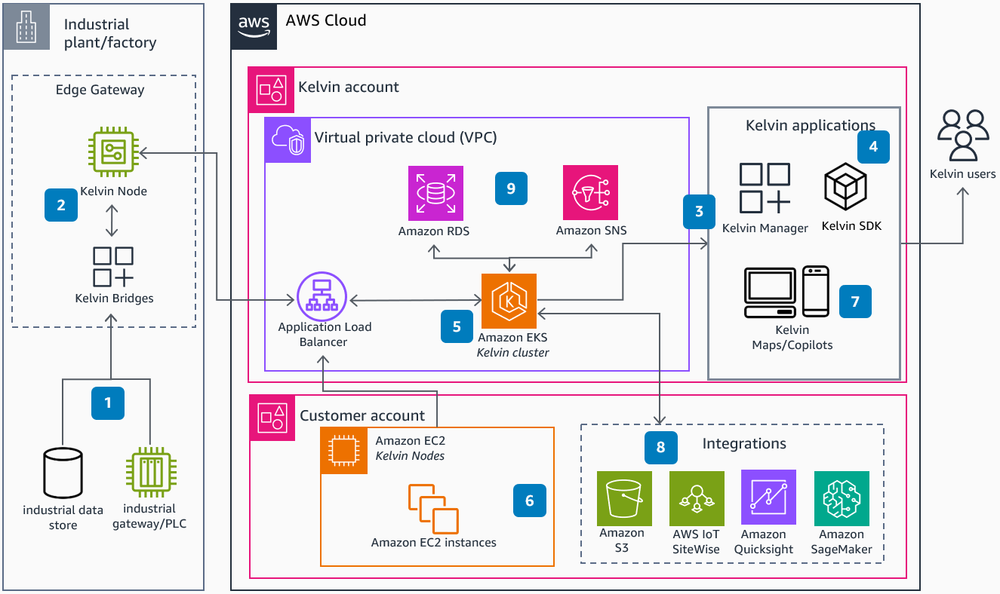
📋 Architecture Overview
This architecture shows how Kelvin, an industrial intelligence platform, connects physical factory assets to cloud-scale analytics and AI. Industrial machines and PLCs feed data to edge gateways, which relay it to the Kelvin platform running on Amazon EKS within a dedicated AWS account. Customer workloads run in a separate account and integrate with a rich ecosystem of AWS services for storage, analytics, and machine learning.
🏭 Key Components:
Industrial Edge (Step 1): Physical industrial data stores and gateway/PLC devices at the factory floor collect sensor readings, operational telemetry, and machine states. This raw operational technology (OT) data is the foundation of the architecture.
Kelvin Node & Bridges (Step 2): Edge Gateway components running inside the factory. Kelvin Nodes act as local compute agents that pre-process and buffer data before securely transmitting it to the cloud. Kelvin Bridges handle the protocol translation between industrial equipment and cloud APIs.
Amazon EKS — Kelvin Cluster (Step 5): The core platform runs as a containerized Kubernetes workload on Amazon EKS within Kelvin's own AWS account. An Application Load Balancer routes external traffic into the cluster. Amazon RDS provides persistent relational storage for platform metadata, while Amazon SNS (Step 9) handles event-driven notifications and alerting across the system.
Kelvin Applications (Steps 3 & 4): Kelvin Manager and Kelvin SDK expose platform capabilities to Kelvin users through web and mobile interfaces (Step 7, Kelvin Maps/Copilots), enabling real-time monitoring, configuration, and AI-assisted decision making.
Customer Account & Integrations (Steps 6 & 8): Customer EC2 instances (running Kelvin Nodes) sit in a separate AWS account. These connect to a suite of AWS integration services: Amazon S3 for raw data archiving, AWS IoT SiteWise for industrial asset modeling and time-series data ingestion, Amazon QuickSight for BI dashboards, and Amazon SageMaker for training and deploying predictive maintenance and anomaly detection ML models.
💡 Key Takeaways
- Edge-to-cloud architecture ensures data collection even with intermittent connectivity at the factory floor
- Separating Kelvin's platform account from the customer account enforces strong multi-tenancy and security boundaries
- Amazon EKS provides the scalable, containerized runtime needed for a multi-tenant SaaS platform
- IoT SiteWise bridges the gap between operational technology (OT) and IT data models
- SageMaker integration enables predictive maintenance, quality control, and process optimization at scale
IBM Instana Observability Across AWS & Hybrid Environments
Full-stack observability platform using IBM Instana SaaS to monitor AWS-native services (EC2, EKS, ECS, ROSA, Lambda) alongside corporate data center infrastructure, with alerts delivered via email, webhooks, and chat
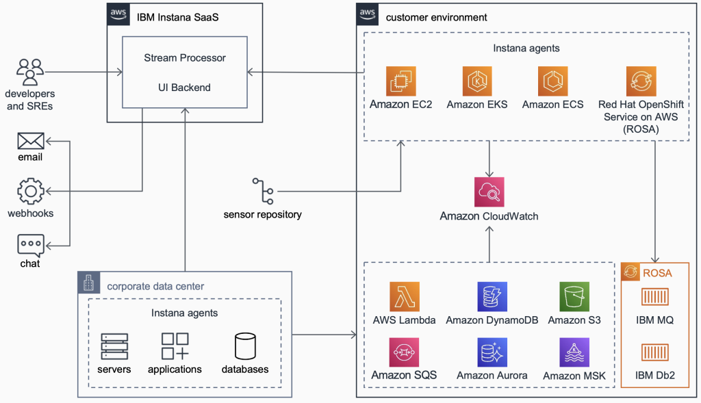
📋 Architecture Overview
This architecture demonstrates enterprise-grade observability using IBM Instana as a SaaS monitoring platform spanning both an AWS customer environment and an on-premises corporate data center. Lightweight Instana agents are deployed across all compute targets and feed telemetry into the Instana SaaS backend for processing, visualization, and alerting. Developers and SREs receive actionable alerts through multiple channels while the sensor repository ensures agent configurations are always current.
🔭 Key Components:
IBM Instana SaaS — Stream Processor & UI Backend: The centralized Instana control plane ingests high-frequency telemetry from all agent sources, processes it in real time using a stream processing engine, and serves dashboards, traces, and alerts through the UI backend. Developers and SREs access full-stack visibility without managing the Instana infrastructure itself.
Customer Environment — Instana Agents on Compute Targets: Agents are deployed directly onto Amazon EC2 instances, within Amazon EKS pods (as a DaemonSet), on Amazon ECS tasks, and inside Red Hat OpenShift Service on AWS (ROSA) clusters. Each agent automatically discovers running processes, services, and dependencies with zero-configuration auto-instrumentation.
Amazon CloudWatch Integration: CloudWatch acts as the central metrics aggregation layer for AWS-native services. Instana pulls CloudWatch metrics for managed services — including AWS Lambda, Amazon DynamoDB, Amazon S3, Amazon SQS, Amazon Aurora, and Amazon MSK — to provide correlated observability across both custom and managed workloads.
ROSA with IBM MQ & IBM Db2: A special ROSA cluster (Red Hat OpenShift on AWS) runs IBM middleware workloads — IBM MQ for message queuing and IBM Db2 for relational data. Instana monitors both the OpenShift platform layer and the IBM application layer, enabling end-to-end distributed tracing across hybrid stacks.
Corporate Data Center — On-Premises Agents: Instana agents installed on on-premises servers, applications, and databases feed the same SaaS backend, creating a unified observability plane that spans both cloud and on-premises infrastructure without siloed tooling.
Alerting Channels: When Instana detects anomalies, threshold breaches, or incidents, it delivers alerts to developers and SREs via email, webhooks (for integration with ITSM tools like PagerDuty or ServiceNow), and chat platforms (Slack, Microsoft Teams).
💡 Key Takeaways
- Instana's agent-based model provides automatic discovery and instrumentation with no code changes required
- A single SaaS control plane unifies observability across cloud, containers, serverless, and on-premises infrastructure
- CloudWatch bridges the gap between Instana and AWS managed services that cannot host agents
- ROSA enables running Red Hat OpenShift workloads on AWS with full managed control plane support
- Multi-channel alerting ensures incidents reach the right responders through their preferred notification method
Multi-Region Active/Passive Disaster Recovery with Aurora Global Database
Production-grade disaster recovery architecture spanning two AWS Regions using Route 53 failover routing, Auto Scaling EC2 fleets, Aurora Global Database with asynchronous cross-region replication, and automated cluster snapshots
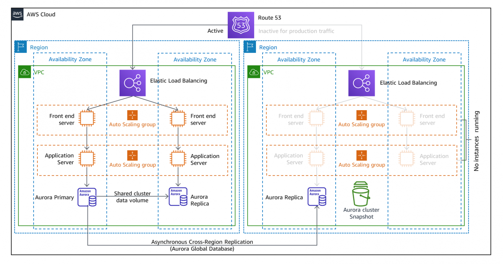
📋 Architecture Overview
This architecture implements a classic active/passive disaster recovery (DR) strategy across two AWS Regions. The active region handles all production traffic with fully provisioned compute resources. The passive region stays in warm standby — database replicas and Auto Scaling group configurations are in place, but no EC2 instances are actively running, keeping DR costs low. Route 53 health checks detect failures and automatically redirect traffic to the passive region within seconds.
🛡️ Key Components:
Route 53 Failover Routing: Route 53 is configured with a primary record pointing to the active region and a secondary record pointing to the passive region. Health checks continuously probe the active region's load balancer. If the health check fails, Route 53 automatically promotes the secondary record, routing all DNS queries to the passive region without manual intervention. TTL tuning controls propagation speed.
Active Region — Elastic Load Balancing & Auto Scaling: Production traffic enters through an Elastic Load Balancer (ELB), which distributes requests across Front End Servers and Application Servers in two Availability Zones. Auto Scaling groups maintain the desired instance count and replace unhealthy instances automatically, ensuring high availability within the region.
Active Region — Aurora Primary & Replica: The active region runs an Aurora Primary instance in one AZ and an Aurora Replica in a second AZ, both sharing a distributed Aurora cluster storage volume. The replica enables read offloading and provides sub-30-second automatic failover if the primary fails within the region — independent of the cross-region DR mechanism.
Passive Region — Warm Standby with No Running Instances: The passive region has its ELB, Auto Scaling groups, and Aurora Replica configured and ready, but no EC2 instances are running. This warm standby approach eliminates the compute cost of a fully active standby while dramatically reducing RTO compared to a cold standby. When failover occurs, Auto Scaling launches instances rapidly from the existing launch configurations.
Aurora Global Database — Asynchronous Cross-Region Replication: Aurora Global Database replicates data from the active region's Aurora cluster to the passive region's Aurora Replica with typical replication lag under one second. This RPO (Recovery Point Objective) means virtually no data loss during a regional failure. In a DR event, the passive region's replica can be promoted to a standalone primary cluster within minutes.
Aurora Cluster Snapshot: The passive region also maintains periodic Aurora cluster snapshots stored in Amazon S3. Snapshots provide a point-in-time recovery option independent of the live replica, protecting against logical data corruption or accidental deletion scenarios that replication alone cannot address.
💡 Key Takeaways
- Active/passive DR balances cost efficiency with fast recovery — warm standby keeps RTO low without paying for idle compute
- Aurora Global Database delivers sub-second RPO with asynchronous cross-region replication at the storage layer
- Route 53 health-check-based failover automates DNS redirection without manual runbook execution
- Multi-AZ within each region handles availability zone failures independently from the cross-region DR strategy
- Cluster snapshots in the passive region guard against logical failures that live replication propagates automatically
VPC Routing with Public & Private Subnets, Internet Gateway & VPN
Foundational VPC networking architecture showing explicit and implicit route table associations, security group isolation across public and private subnets, and site-to-site VPN connectivity to a corporate data center
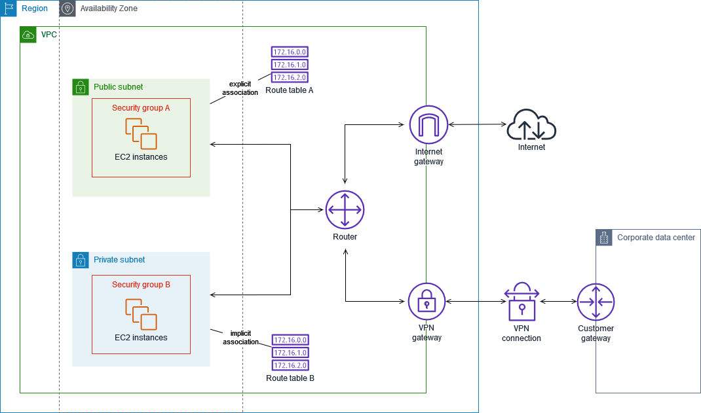
📋 Architecture Overview
This diagram illustrates the core VPC networking concepts every AWS architect must understand: how route tables control traffic flow, how public and private subnets differ, and how a Site-to-Site VPN extends a corporate data center into the AWS cloud. All components sit within a single Region and a single Availability Zone, making it ideal for understanding subnet-level routing before scaling to multi-AZ designs.
🌐 Key Components:
Public Subnet with Security Group A: Hosts EC2 instances that need direct internet access — typically web servers or bastion hosts. The subnet is "public" because its associated Route Table A contains an explicit route directing internet-bound traffic (0.0.0.0/0) to the Internet Gateway. Security Group A defines the allowed inbound/outbound rules at the instance level (e.g., HTTP/HTTPS inbound).
Private Subnet with Security Group B: Hosts EC2 instances that must not be directly reachable from the internet — typically application servers, databases, or internal microservices. Route Table B is implicitly associated with this subnet and routes outbound traffic through the VPN Gateway rather than the Internet Gateway, keeping traffic on private networks. Security Group B is typically more restrictive, only permitting traffic from Security Group A.
Route Table A (Explicit Association): Explicitly associated with the public subnet. Contains routing rules that send 172.16.0.0, 172.16.1.0, and 172.16.2.0 prefixes through the VPC Router, plus a default route to the Internet Gateway. Explicit association means this route table was manually linked to the subnet.
Route Table B (Implicit Association): Implicitly associated with the private subnet — meaning it is the VPC's main route table and applies to any subnet not explicitly linked to another route table. It routes the same 172.16.x.x prefixes through the router, with private traffic directed toward the VPN Gateway instead of the Internet Gateway.
VPC Router: The implicit, always-on routing component inside every VPC. It handles local routing between subnets and forwards traffic to the correct gateway (Internet Gateway or VPN Gateway) based on the destination IP and the route table entries.
Internet Gateway: An AWS-managed, horizontally scaled gateway attached to the VPC that enables bidirectional internet communication for instances in public subnets. It performs NAT for instances with public IP addresses.
VPN Gateway, VPN Connection & Customer Gateway: Together these three components establish an AWS Site-to-Site VPN tunnel. The VPN Gateway is the AWS-side endpoint attached to the VPC. The Customer Gateway represents the on-premises router or firewall device. The VPN Connection is the encrypted IPsec tunnel between them, enabling private EC2 instances to communicate securely with the corporate data center over the public internet.
💡 Key Takeaways
- The only difference between a public and private subnet is whether its route table has a route to an Internet Gateway
- Route Table A uses explicit association (manually linked); Route Table B uses implicit association (main route table fallback)
- Security groups are stateful firewalls that operate at the instance level — NACLs operate at the subnet level
- A VPN Gateway + Customer Gateway + VPN Connection creates an encrypted Site-to-Site IPsec tunnel for hybrid connectivity
- The VPC Router is implicit — you configure it through route tables, not directly
Serverless Web Application with Cognito Auth, CloudFront & Lambda
Production serverless architecture featuring CloudFront CDN delivery, Cognito token-based authentication, API Gateway routing to role-isolated Lambda functions, DynamoDB data retrieval, and ACM-managed SSL/TLS certificates on a custom domain
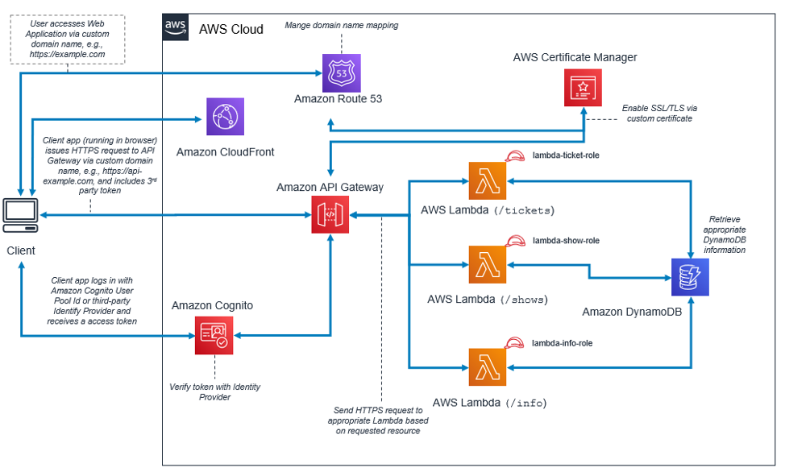
📋 Architecture Overview
This architecture represents a complete, production-ready serverless web application. A browser client accesses the app through a custom domain secured by SSL/TLS. CloudFront accelerates global delivery, Cognito handles identity and token verification, and API Gateway routes requests to three dedicated Lambda functions — each scoped to its own IAM role and backed by DynamoDB. The design demonstrates clean separation of concerns: every resource path (/tickets, /shows, /info) has its own Lambda with its own least-privilege IAM role.
⚡ Key Components:
Client & Custom Domain: The user's browser navigates to a custom domain (e.g., https://example.com). The client-side app issues HTTPS API requests to a separate API subdomain (e.g., https://api-example.com), sending a third-party token along with each request for authorization.
Amazon CloudFront: Acts as the global CDN and HTTPS termination point for the web application. CloudFront caches static assets at edge locations worldwide, reducing latency for geographically distributed users and offloading origin traffic. It integrates with Route 53 for custom domain mapping and with ACM for free SSL/TLS certificates.
Amazon Route 53: Manages DNS records for the custom domain, mapping the friendly domain name to the CloudFront distribution and the API Gateway endpoint. Route 53 also supports health checks and latency-based routing for multi-region deployments.
AWS Certificate Manager (ACM): Provisions and auto-renews a free SSL/TLS certificate bound to the custom domain. CloudFront uses this certificate to enable HTTPS, ensuring all data in transit is encrypted. ACM certificates for CloudFront must be created in the us-east-1 region.
Amazon Cognito: Handles user authentication and authorization. The client logs in using a Cognito User Pool ID or a third-party identity provider (e.g., Google, SAML). Cognito issues a JWT access token, which the client app attaches to every API Gateway request. API Gateway verifies this token with Cognito before forwarding the request to Lambda — acting as a zero-code authorizer.
Amazon API Gateway: The unified API entry point that receives HTTPS requests, validates Cognito tokens, and routes each request to the appropriate Lambda function based on the URL path: /tickets, /shows, or /info. API Gateway also handles rate limiting, request validation, and CORS configuration.
AWS Lambda Functions with IAM Roles: Three dedicated Lambda functions each handle one API resource. Each function is assigned its own IAM execution role (lambda-ticket-role, lambda-show-role, lambda-info-role), enforcing least-privilege access — each Lambda can only read the specific DynamoDB table items it needs, preventing over-permissioning.
Amazon DynamoDB: A fully managed NoSQL database storing the application data (ticket, show, and info records). Lambda functions retrieve the appropriate DynamoDB information based on incoming request parameters and return the result to the API Gateway response chain.
💡 Key Takeaways
- Separate IAM roles per Lambda function enforces least-privilege — a compromised function cannot access other resources
- Cognito token verification at API Gateway provides zero-code authentication without custom Lambda authorizer logic
- ACM certificates are free, auto-renewing, and eliminate the operational burden of manual certificate management
- CloudFront + Route 53 enables custom domain HTTPS for serverless apps without managing any web servers
- Path-based Lambda routing keeps function responsibilities small, independently deployable, and easier to test
Multi-AZ Containerized App with ECS Fargate, Cognito & DynamoDB
Highly available containerized web application using ECS Fargate across two Availability Zones, fronted by CloudFront and Cognito for global delivery and authentication, with DynamoDB for data storage, CloudWatch for monitoring, and ECR for container image management
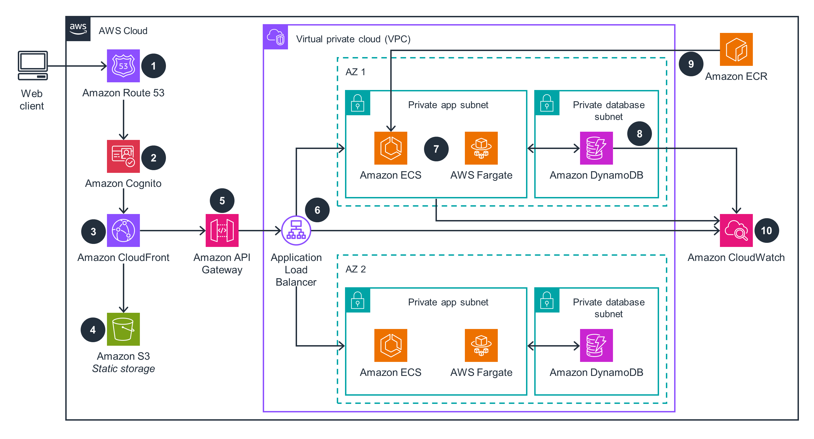
📋 Architecture Overview
This architecture delivers a highly available containerized web application without managing any servers. AWS Fargate eliminates EC2 instance management, while ECS provides container orchestration across two Availability Zones. The front-end delivery stack (Route 53 → Cognito → CloudFront → S3) handles authentication and global content delivery, while the backend stack (API Gateway → ALB → ECS/Fargate → DynamoDB) processes application logic. CloudWatch provides end-to-end observability, and ECR stores container images close to where they run.
🐳 Key Components:
Step 1 — Amazon Route 53: Resolves the web client's custom domain to the CloudFront distribution. Route 53 also supports latency-based routing and health checks if the architecture scales to multiple regions.
Step 2 — Amazon Cognito: Authenticates users before they access the application. Cognito issues JWT tokens validated by API Gateway, enabling token-based authorization across all backend API calls without custom auth code in the application containers.
Step 3 — Amazon CloudFront: A global CDN that caches and delivers static web assets from the nearest edge location, drastically reducing latency for international users. CloudFront also enforces HTTPS and integrates with ACM for certificate management.
Step 4 — Amazon S3 (Static Storage): Stores the static frontend assets (HTML, CSS, JavaScript, images) that CloudFront distributes. S3 serves as the CloudFront origin for static content, decoupling it from the dynamic containerized backend.
Step 5 — Amazon API Gateway: The single entry point for all dynamic API requests. After verifying the Cognito token, API Gateway forwards requests to the Application Load Balancer, which routes them to the appropriate ECS service.
Step 6 — Application Load Balancer (ALB): Distributes incoming API traffic across ECS Fargate tasks in both Availability Zones. The ALB performs health checks on tasks and automatically stops routing to unhealthy containers, ensuring zero-downtime deployments and fault tolerance.
Steps 7 — Amazon ECS + AWS Fargate (AZ 1 & AZ 2): ECS manages container task scheduling and service definitions, while Fargate provides the serverless compute layer — no EC2 instances to patch or right-size. Tasks run in private app subnets in both AZ 1 and AZ 2, providing resilience against an AZ failure. Container images are pulled from ECR at task launch.
Step 8 — Amazon DynamoDB (Private Database Subnets): A fully managed, serverless NoSQL database deployed in private database subnets in both AZs. DynamoDB stores application state and data, responding to read/write requests from ECS Fargate tasks. DynamoDB's built-in multi-AZ replication means the application's data layer is inherently highly available.
Step 9 — Amazon ECR: A fully managed container registry storing the Docker images deployed to ECS Fargate. ECR integrates with IAM for access control and with CI/CD pipelines (CodePipeline, GitHub Actions) to push new image versions. ECS pulls images from ECR when launching or updating tasks.
Step 10 — Amazon CloudWatch: Provides comprehensive monitoring for the entire stack — ECS task metrics (CPU, memory), ALB access logs, DynamoDB read/write capacity, and custom application metrics. CloudWatch Alarms can trigger Auto Scaling policies for ECS services based on traffic patterns.
💡 Key Takeaways
- AWS Fargate eliminates EC2 instance management — you pay per task vCPU/memory second, not per idle instance
- Separating static assets (S3 + CloudFront) from dynamic workloads (ECS + ALB) optimizes cost and performance independently
- Private app and private database subnets in both AZs create two independent failure domains at every tier
- ECR + ECS native integration streamlines container image deployment with built-in IAM-based access control
- CloudWatch enables a single-pane-of-glass for metrics, logs, and alarms across all managed services in the stack
EKS Private Certificate Authority with cert-manager & ACM PCA
Automated TLS certificate lifecycle management inside Amazon EKS using AWS Private CA (ACM PCA), the cert-manager Certificate Controller, Kubernetes Secrets, and an NLB Ingress controller with SSL termination at the edge
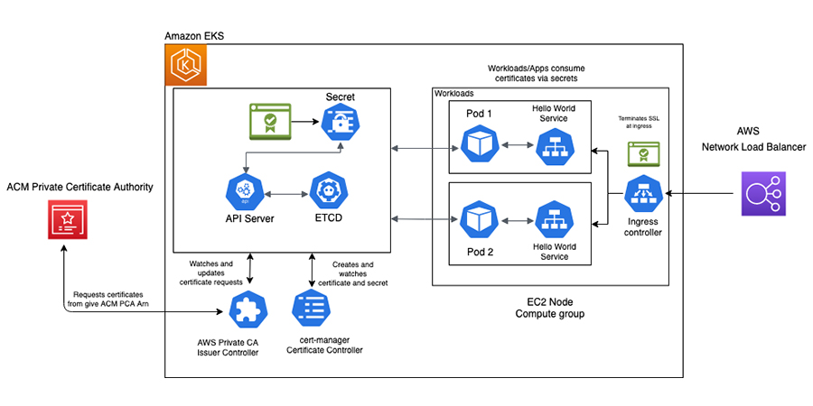
📋 Architecture Overview
This architecture solves a critical operational challenge in enterprise Kubernetes: automating the full lifecycle of private TLS certificates for internal services. Rather than manually generating, distributing, and rotating certificates, this design uses ACM Private CA as the trusted root authority and cert-manager as the Kubernetes-native automation engine. The result is certificates that are automatically requested, issued, stored as Kubernetes Secrets, consumed by application pods, and rotated before expiry — with SSL terminated at the NLB Ingress layer.
🔐 Key Components:
ACM Private Certificate Authority (ACM PCA): AWS's fully managed private CA service acts as the root or subordinate certificate authority for the organization. It issues X.509 certificates signed by the private CA, enabling mTLS and internal service-to-service encryption without relying on public CAs. ACM PCA is referenced by its ARN (Amazon Resource Name) when configuring the issuer controller.
AWS Private CA Issuer Controller: A Kubernetes controller (deployed as a pod in EKS) that bridges cert-manager with ACM PCA. When cert-manager creates a certificate request, the Issuer Controller intercepts it, calls the ACM PCA API using the configured PCA ARN, and retrieves the signed certificate. It watches for certificate request events and updates their status once the CA responds.
cert-manager Certificate Controller: The core cert-manager component running inside the EKS control plane. It watches Kubernetes Certificate custom resources, creates CertificateRequest objects, monitors their status, and stores the resulting signed certificate and private key as a Kubernetes Secret. It also handles automatic certificate renewal before expiry (typically at 2/3 of the certificate's lifetime).
Kubernetes API Server & ETCD: The API Server is the central management plane for all Kubernetes resources — it receives certificate requests from cert-manager and stores the resulting certificate Secrets. ETCD is the distributed key-value store backing the API Server, persisting all cluster state including Secrets. Secrets containing TLS certificates are encrypted at rest in ETCD when EKS envelope encryption is enabled.
Kubernetes Secret (TLS Certificate): The certificate and private key issued by ACM PCA are stored as a Kubernetes TLS Secret. Application workloads consume certificates by mounting this Secret as a volume or referencing it in an Ingress resource — decoupling certificate management from application deployment.
EC2 Node Compute Group — Pods & Hello World Services: Application pods (Pod 1 and Pod 2) run on EC2 worker nodes in the EKS cluster. Each pod runs a Hello World Service that consumes TLS certificates via the Kubernetes Secret, enabling encrypted communication between internal services or exposing HTTPS endpoints to the Ingress controller.
Ingress Controller & AWS Network Load Balancer (NLB): The Ingress controller (e.g., AWS Load Balancer Controller) routes external HTTPS traffic into the appropriate pods based on Ingress rules. SSL is terminated at the Ingress layer using the ACM-issued certificate — the NLB handles TLS handshake at the edge, forwarding decrypted traffic to the pods over the cluster network.
💡 Key Takeaways
- cert-manager automates the full certificate lifecycle — no manual CSR generation, signing, or rotation required
- ACM PCA provides a managed, auditable private CA without running your own CA infrastructure
- Certificates stored as Kubernetes Secrets are accessible to any pod in the namespace — RBAC controls who can read them
- SSL termination at the NLB/Ingress layer means backend pods can run plain HTTP internally, simplifying service code
- The Issuer Controller pattern decouples Kubernetes cert-manager from the specific CA backend — you can swap ACM PCA for Vault or Let's Encrypt without changing application code
Multi-AZ High Availability with EC2, ALB, EFS Shared Storage & RDS Read Replica
Classic high-availability web architecture spanning two Availability Zones with an Application Load Balancer across public EC2 instances, a shared EFS file system with per-AZ mount targets, and RDS with asynchronous read replica replication in private subnets
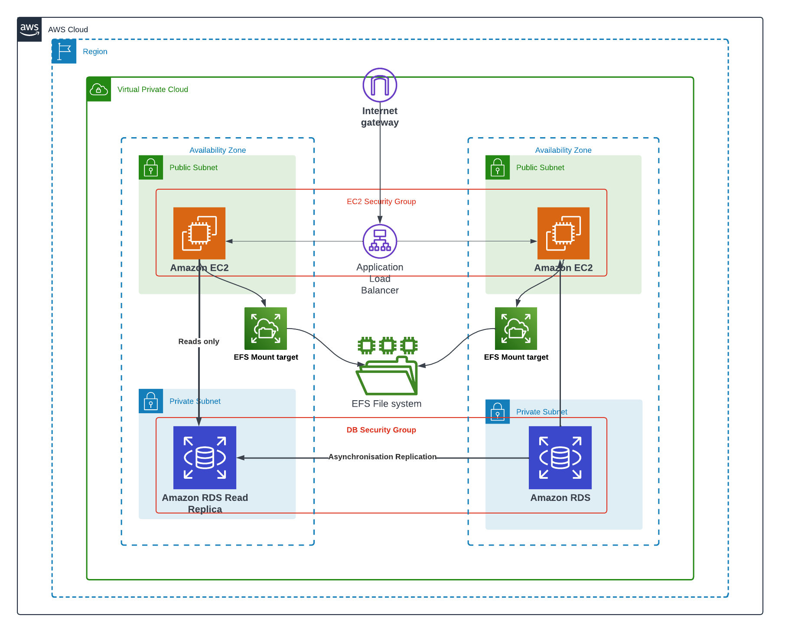
📋 Architecture Overview
This architecture represents a well-established, production-proven pattern for running stateful web applications with high availability. Two EC2 instances in separate Availability Zones handle compute, an Application Load Balancer distributes traffic between them, Amazon EFS provides a shared POSIX-compliant file system accessible from both AZs simultaneously, and Amazon RDS with a Read Replica in the second AZ handles the database tier. Security groups control traffic at both the compute and database layers, clearly separating the network security boundary for each tier.
🖥️ Key Components:
Internet Gateway: The VPC-level gateway that allows the EC2 instances in the public subnets to receive inbound traffic from the internet and send outbound traffic. The Internet Gateway is attached to the VPC and referenced in the public subnet route tables.
Application Load Balancer (EC2 Security Group): An ALB deployed across both public subnets, covered by the EC2 Security Group. The ALB receives all inbound HTTP/HTTPS traffic from the Internet Gateway and distributes it evenly (or via sticky sessions) to the EC2 instances in AZ 1 and AZ 2. ALB health checks automatically stop routing to unhealthy instances, maintaining uptime during instance failures or deployments.
Amazon EC2 Instances (Public Subnets — AZ 1 & AZ 2): Two EC2 web/application servers, one in each Availability Zone's public subnet. Both instances are covered by the EC2 Security Group, which permits inbound traffic only from the ALB (not directly from the internet). Running instances in public subnets here allows them to receive load-balanced traffic while still providing direct outbound internet access for package updates or API calls.
Amazon EFS with Mount Targets: Amazon Elastic File System provides a fully managed, scalable NFS file system shared across both EC2 instances simultaneously. Each AZ has its own EFS Mount Target — a network endpoint within that AZ's subnet — ensuring low-latency, in-AZ access to the shared file system. The left EC2 instance is labelled "Reads only" from EFS, indicating a common pattern where one node writes (e.g., uploaded content) and replicas serve reads. EFS automatically replicates data across multiple AZs within the region for durability.
Amazon RDS (Private Subnet — AZ 2) & RDS Read Replica (Private Subnet — AZ 1): The primary Amazon RDS instance resides in the private subnet of AZ 2, covered by the DB Security Group which only permits inbound connections from the EC2 Security Group. A Read Replica in AZ 1's private subnet receives asynchronous replication from the primary RDS instance — write transactions commit to the primary and are replicated to the replica with minimal lag. The Read Replica offloads read-heavy queries (reporting, search) from the primary, improving overall database throughput. In a failure scenario, the Read Replica can be promoted to a standalone primary.
DB Security Group: A dedicated security group applied to both the RDS primary and Read Replica. It only allows inbound database port traffic (e.g., port 3306 for MySQL or 5432 for PostgreSQL) from instances within the EC2 Security Group — blocking all other traffic, including direct internet access. This enforces strict network segmentation between the application and database tiers.
💡 Key Takeaways
- Amazon EFS enables true shared storage across multiple EC2 instances — unlike EBS which is attached to a single instance at a time
- EFS Mount Targets are per-AZ — each AZ needs its own mount target for low-latency, local access to the shared file system
- RDS Read Replicas use asynchronous replication — there may be slight replication lag, so replicas are best for eventually-consistent read workloads
- Separate DB Security Groups enforce the principle of network segmentation — database ports are never exposed directly to the internet
- Placing the ALB in public subnets while keeping EC2 instances reachable only through the ALB is a common pattern to reduce the public attack surface